速览
很多人已不熟悉，但以前的游戏是在显像管（CRT）上玩的，樱井作为记录聊聊。显像管是漏斗形的，里面是真空：从电子枪发射电子束，让屏幕荧光体发出红绿蓝光来显示画面；基本上电子束从左到右画细细的一行，马上画下一行，高速重复，靠残像成像，所以画面有点闪。到 SFC、N64 乃至 GC 的时代都还是 CRT，开发环境的电视又大又深，很多人在上面摆手办——不管在哪家公司，总有某个座位摆着高达模型。从游戏角度看 CRT 有几个特点：① 反应快：比起液晶电视，不经过缓冲和影像处理器，响应速度快，听说执着于老游戏高分的人不少坚持用 CRT。② 画面亮丽：是发光体，同样的影像白色的光辉也不同，亮度调高甚至能看到光晕——喜欢这种画面的人应该有，他就喜欢。③ 能玩光线枪：现在也不是不能玩，但原则上多需要外部传感器（如感应条）；FC 光线枪配 CRT 就不需要。当时的光线枪其实就像摄像头：不是枪口射出什么，而是枪口「看」画面；扣扳机的瞬间判定扫描线画到哪里，同时画面变暗、有判定的物体显示白框，扫描线在特定位置时捕捉到白框就算命中——原理上很难在液晶上实现。另外，NTSC 电视的扫描线基本是 525 条：先画 1、3、5 等奇数行，画到底再画 2、4、6 偶数行，称为「场」，即所谓隔行扫描（交替大概是为了减少只画上面、下面没画的时间）。一般影像奇偶两场画同一张图，合计需 1/30 秒；而游戏机在奇偶场画不同的图，实现 1/60 秒、即每秒 60 帧。还有 FC 时代俗称「安全框」的概念（开发方的说法）：525 条扫描线中有效扫描线据说约 490 条，CRT 画面并非全部可见，做游戏时有大致这里以外看不见的区域，那里有时会发生难看的事——比如角色破图，但当时没问题。很多人可能没见过，但以前的游戏是以 CRT 显示为大前提的，请理解这会造成与现在的感受差异：棋盘格状排布的点阵等在 CRT 上看质感完全不同。
1. CRT 的原理 0:07
以前的游戏是在显像管上玩的。显像管是漏斗形的真空管：从电子枪发射电子束，让屏幕荧光体发出红绿蓝光。
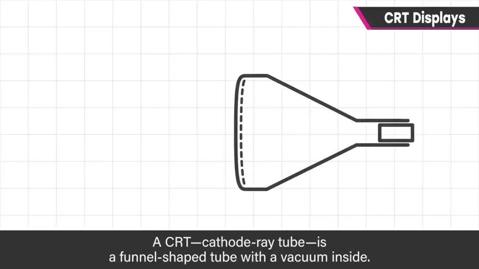
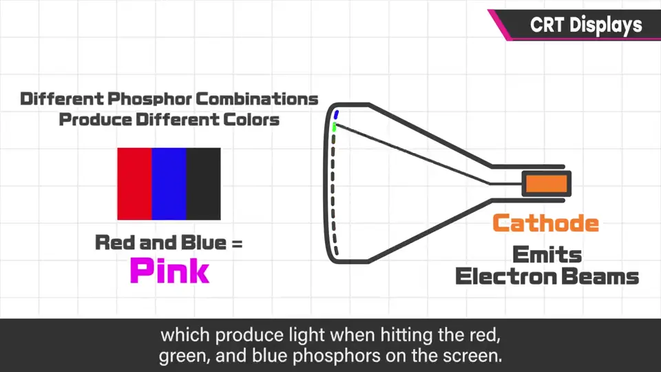
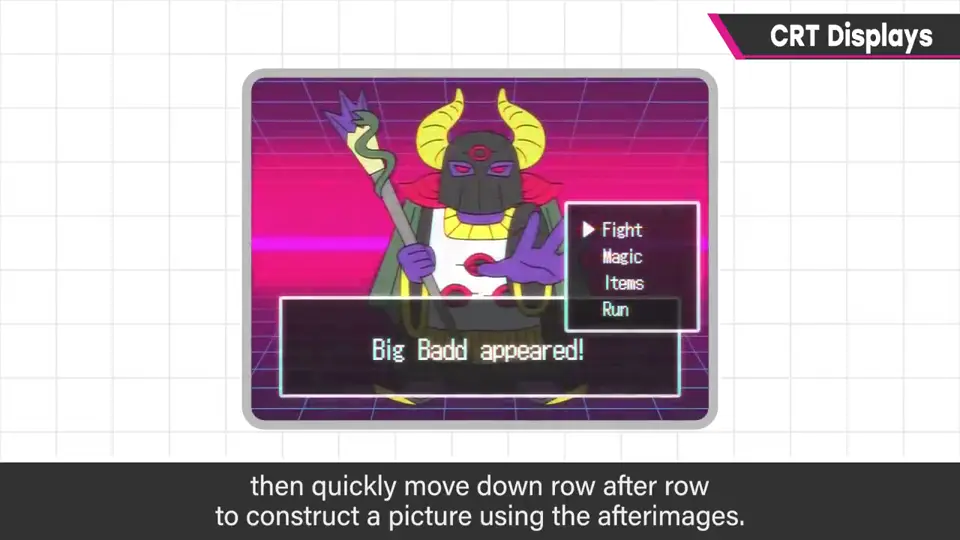
电子束从左到右画细细的一行，马上画下一行，高速重复，靠残像成像——所以画面有点闪。
到 SFC、N64 乃至 GC 时代都还是 CRT，开发环境的电视又大又深；不管哪家公司，总有座位在电视上摆着高达模型。
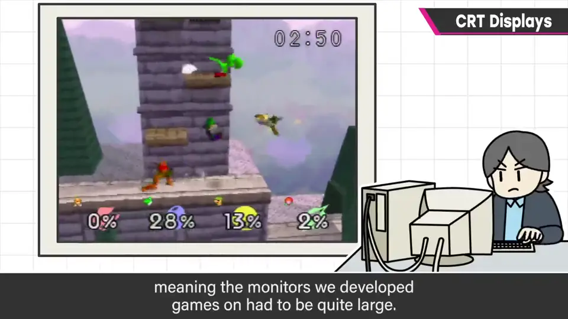
2. 游戏视角的特点 1:09
- 反应快：不经缓冲与影像处理器，响应快，执着高分的玩家不少坚持用 CRT。
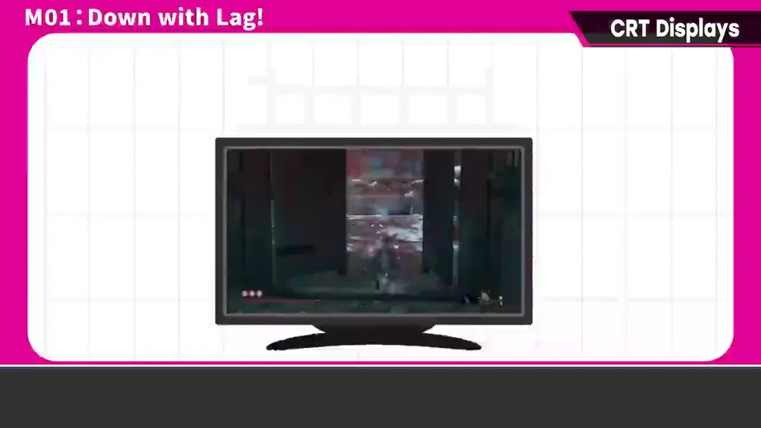
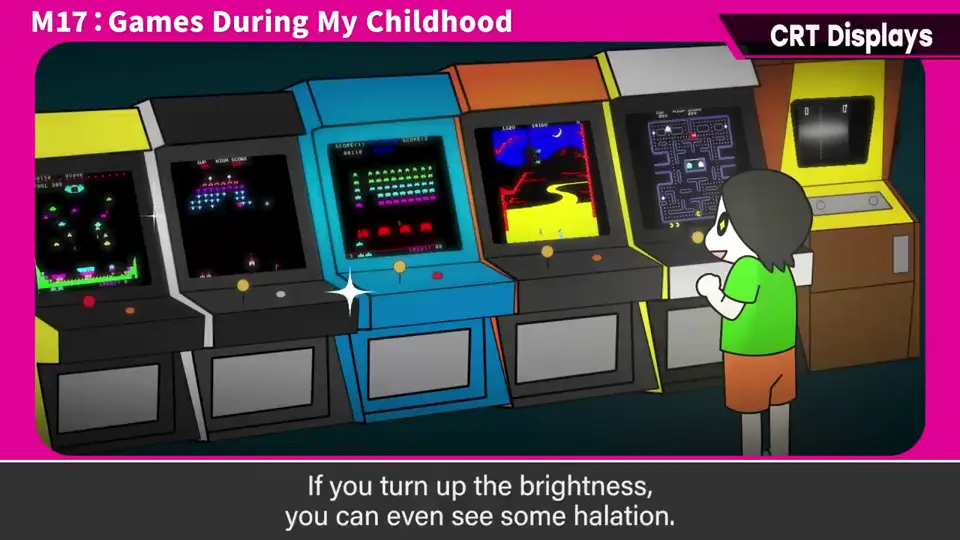
- 画面亮丽：荧光体发光，白色的光辉不同，调高亮度可见光晕——他很喜欢。
- 能玩光线枪：如今多需外部传感器（如感应条），FC 光线枪配 CRT 则不需要。
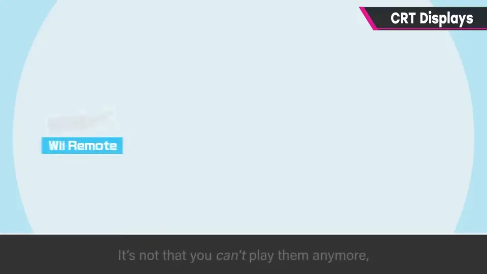
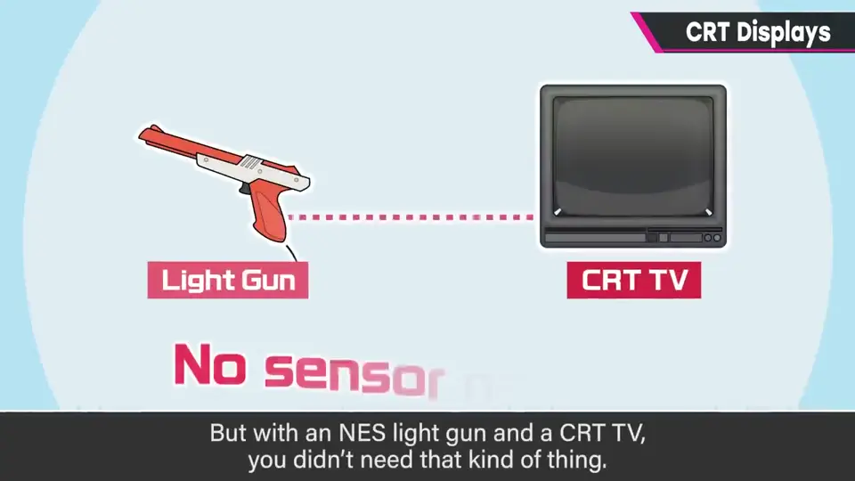
3. 光线枪的原理 2:09
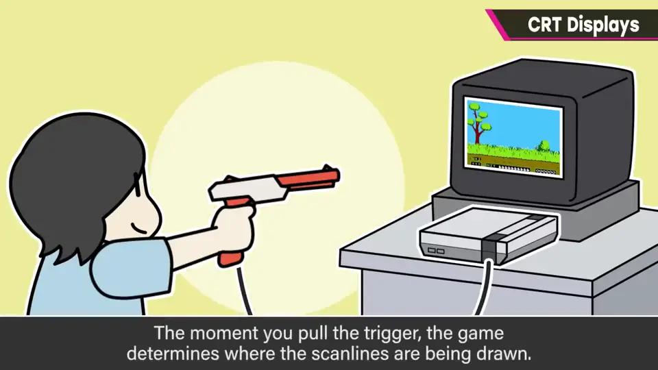
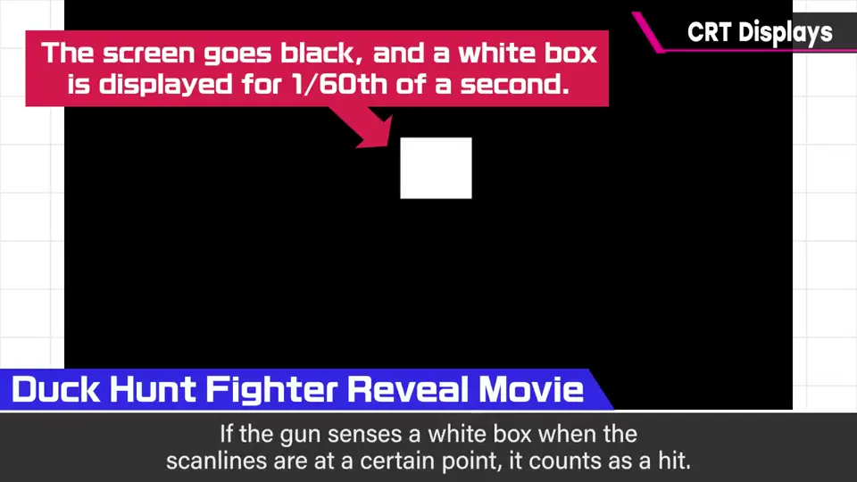
同时画面变暗，有判定的物体显示白框；扫描线在特定位置时捕捉到白框就算命中——原理上很难在液晶上实现。
4. 隔行扫描与 60 帧 2:45
NTSC 电视扫描线基本是 525 条：先画 1、3、5 等奇数行，再画 2、4、6 偶数行（称为「场」）——所谓隔行扫描。
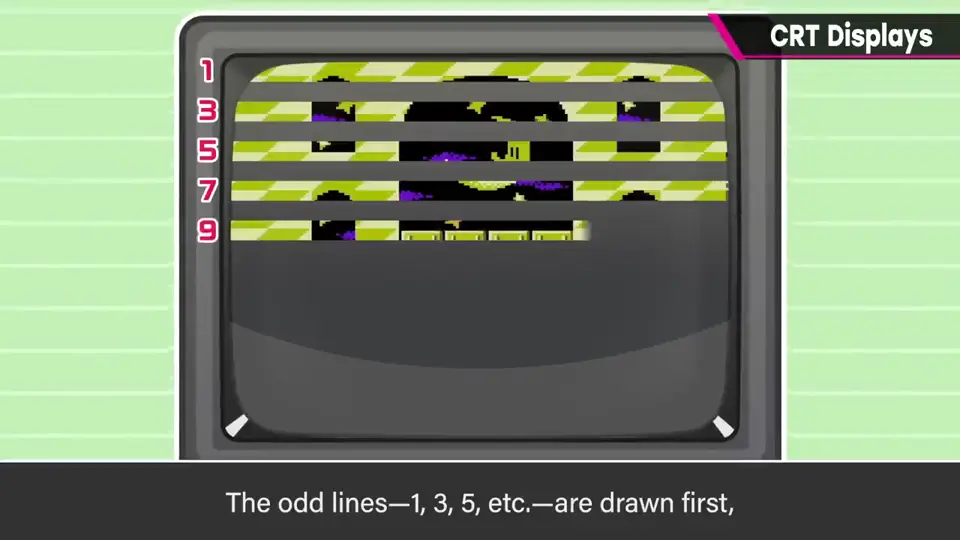
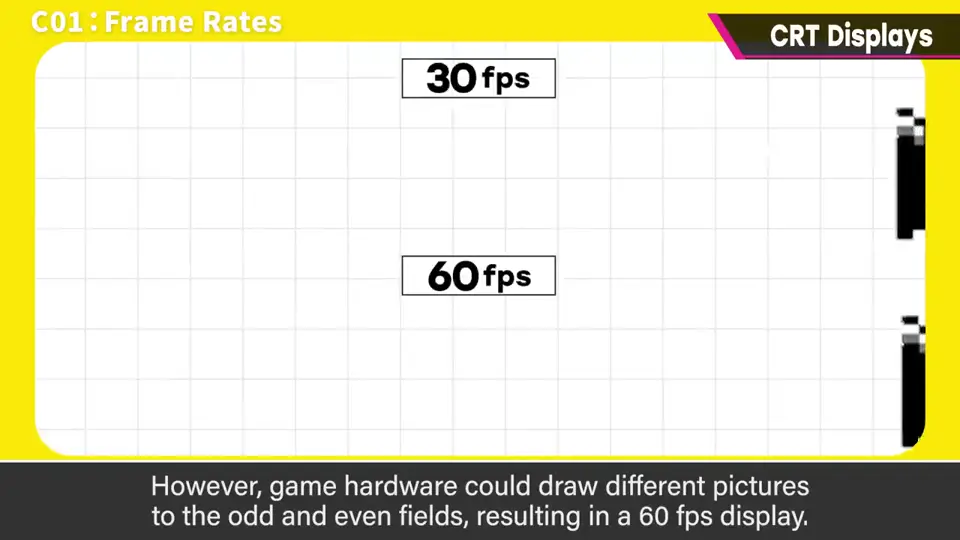
5. 安全框 3:33
FC 时代有俗称「安全框」的概念：525 条扫描线中有效的约 490 条，CRT 画面并非全部可见，做游戏时有大致看不见的区域。
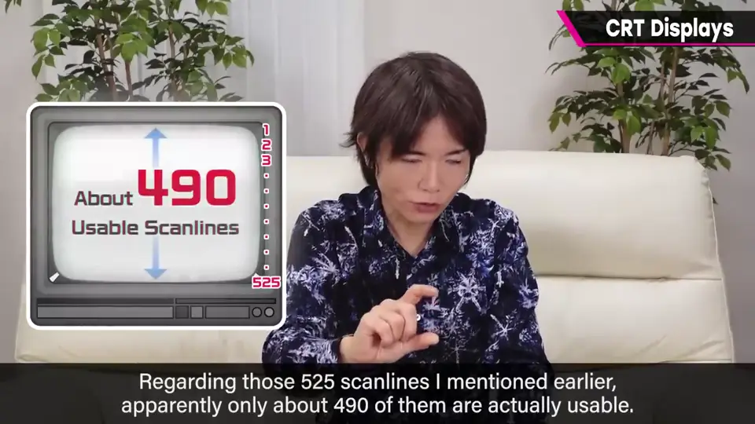
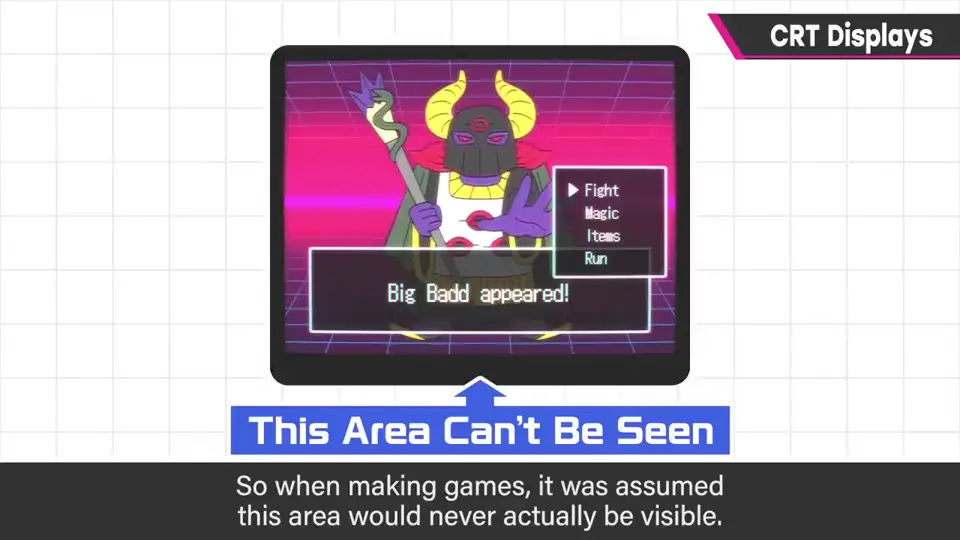
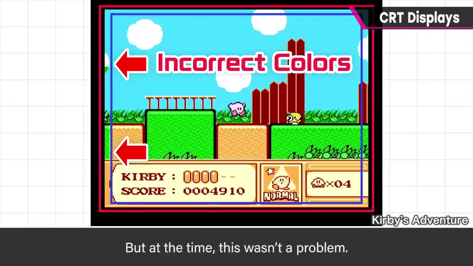
那里有时会发生难看的事，比如角色破图或颜色不对，但当时没问题。
6. CRT 前提下的感受 4:28
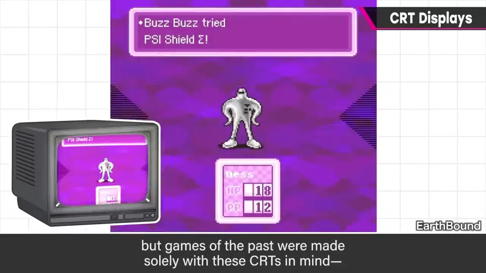
自测题
1. FC 光线枪如何判定命中？
枪像摄像头看画面；扣扳机时画面变暗、目标显示白框，按扫描线位置捕捉白框判定命中。 2:36
2. 游戏机如何在隔行扫描的 CRT 上实现 60 帧？
在奇数场与偶数场画不同的图，每场 1/60 秒。 3:36
3. 什么是「安全框」？
有效扫描线约 490 条，画面边缘看不到；做游戏时把重要内容放在可见范围内，边缘破图也无妨。 4:12